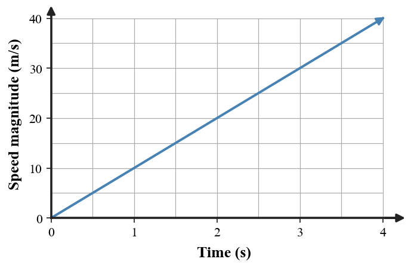
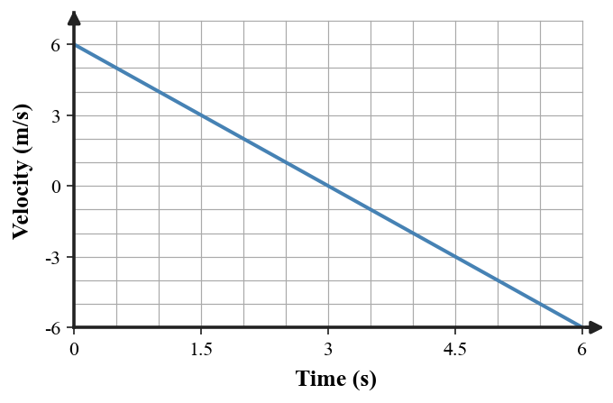
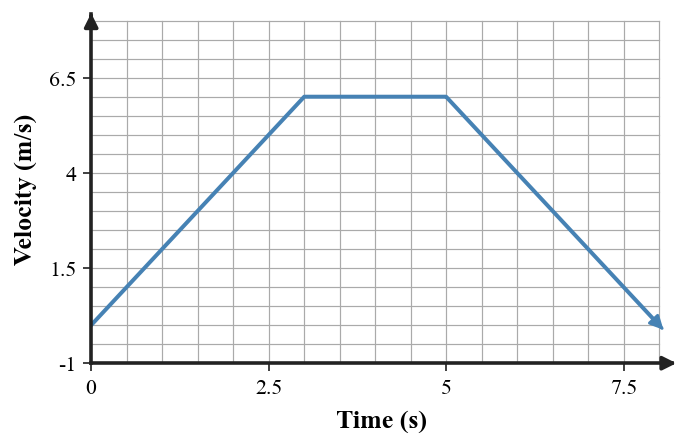

Choose the best velocity-vector model. Defend the choice using speed, direction, velocity, and acceleration.
Select the best model and defend why another model fails.

Evaluate whether the graph could model the magnitude of the ball’s downward velocity. Use $g\approx10\,\text{m/s}^2$ as evidence and state one limitation of using speed magnitude instead of a signed velocity direction.
Choose the best combined evidence set:
Defend your choice and identify when acceleration occurs.
Two models are proposed for a car that follows a curved road at constant speed.
Defend the stronger model and explain what evidence about velocity the weaker model misses.

Defend whether the graph is a reasonable model. Explain the meanings of positive velocity, zero velocity, and negative velocity in this context.
A class must choose a model for a car that moves north at 12 m/s for 4 s and then east at 12 m/s for 4 s.
A student uses this velocity-time graph to model a cart.

Write one plausible motion scenario, then defend it with at least two quantitative or qualitative graph features. Finally, name one different representation that would add information the graph does not show.